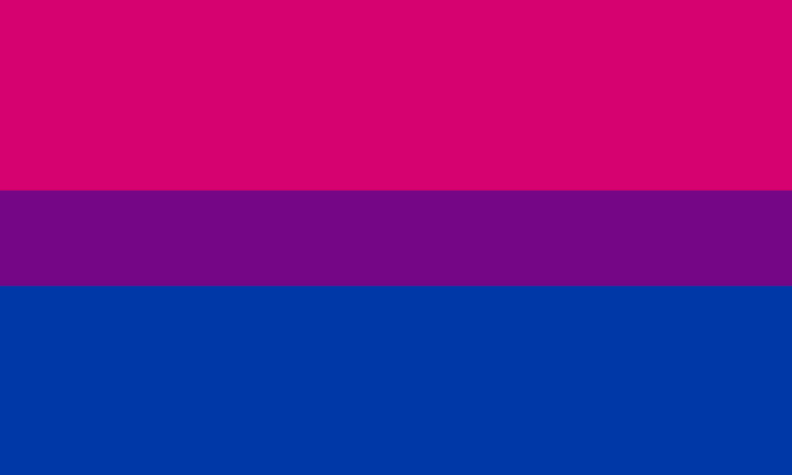

Bisexualidad
¿Alguna vez haz escuchado la palabra "bisexualidad" pero no sabes qué es? ¡Aquí te la explicamos!
Bandera bisexual
El significado de la palabra "bisexualidad"
La bisexualidad es una orientación sexual hacia los hombres, las mujeres e incluso personas transgénero y no binarias. Se suele decir coloquialmente que una persona es "bi" para referirse a una persona bisexual.
¿Las personas bisexuales están confundidas?
No. Aunque haya personas que creen que las personas bisexuales están confundidas y en realidad son heterosexuales, lesbianas o gais, esto no es cierto, ya que una persona puede ser atraída por más de un género. Esta creencia nace gracias a que hay varias personas que en su proceso de autodescubrimiento creen que son bisexuales.
Categoría
LGBTQ+